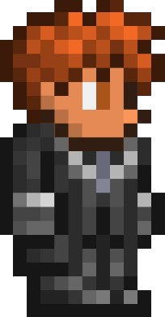

Unmapped
Základní info

Jméno: Ioannes Inimpressum
Neo je hlavní postava filmu Matrix. Je známý jako „Vyvolený“,
který dokáže manipulovat s Matrixem.
Základní info
Unmapped je hra z pohledu shora, s boční perspektivou, pixelová hra, která se odehrává v labyrintu, z něhož se musíte dostat.
Ale není to jen o tom, že se musíte dostat ven, musíte se také vyhnout tomu, abyste nebyli napadeni tvory v labyrintu, kteří mají své vlastní postižení určitého druhu,
ale stále si musíte uvědomit a pamatovat, že jsou nebezpeční svým způsobem. Nezapomeňte také,
že tato hra je časově omezená a váš nejlepší čas se zobrazí na žebříčku na webu, kde budete vyobrazeni.
Na této stránce se pořád pracuje, některé informace se mohou změnit